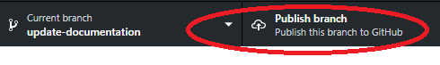
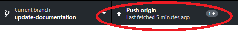
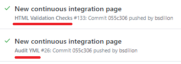

Creating and Handling Pull Requests
Make sure you have GitHub desktop downloaded and cloned the repository. If you don't, go to this link.
- Click on Current Branch dropdown and select "New Branch".
- After you name it, make changes to a file by opneing your repository in a different application. Here I used Atom.

- After you make changes, click on Commit to your branch in the bottom left of the desktop interface.
- Click on "Publish branch" to upload it to the GitHub site. You can make additional changes on your local machine as often as you want. For subsequent changes you will just need to Push to Origin on the already published branch.


- You can create tests, add tests to existing tests, and create other workflows to check your work. These can be prompted by anything that is pushed to the repository on any branch. In fact your pushes may have already prompted
some tests to run. Make sure you are passing all tests before attempting a pull request.

- Assign yourself to review this pull request, add a description, and click on Create pull request.

- Make sure the branch is passing the GitHub's validation checks, and if it doesn't, go back to step 3.

- Click on merge request, and the changes you make will be merged to the master branch.